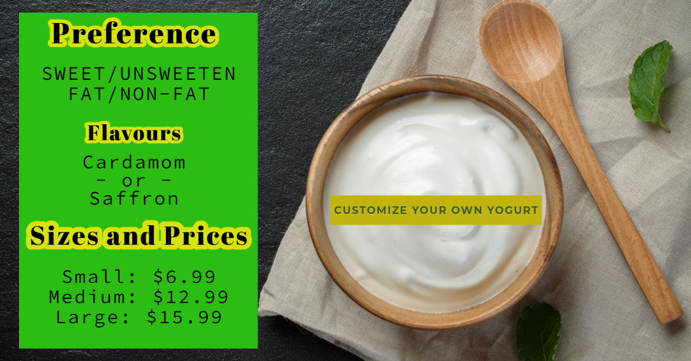

<div class="container">
    <h1> Our Choices of Yogurts </h1>
    <div class="container">
    <hr>
    <div class="img-menu"> 
        
        <div class="box4">
            <a class="slink" routerLink="orderonline" routerLinkActive="active-link"> Order Now</a>
         </div>
    </div>
</div>

<!-- <div class="container2">
    <div class="box1-container1" id="premiumList">
                <h1 class="hed">Premium Yogurt  </h1> <hr>
                <p> Our Premium full-fat organic yogurt is made with traditional manner to create a rich,smooth and creamy yogurt from freshest milk.
                    It contains saffron from Pakistan. Currently,our premium yogurt is only available in large size which is 45oz. 
                    As it is fragmented in clay, it provides earthy flavour containing high protein and calcium.Available with nuts on the side. </p>
    </div>
</div> -->


